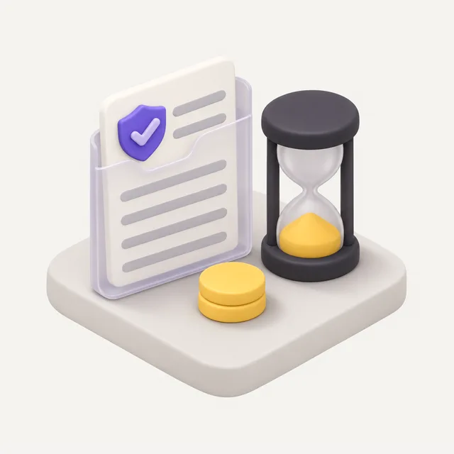

기록을 맞춰 보고 있어요
링크를 받은 사람만 볼 수 있어요. 이름과 계좌는 체무가 가려서 보여 줘요.
A님 · 11월 14일 토요일 근무
체무가 87,720원을 보관하고 있어요
차이 나는 5,160원은 사장님이 정할 때까지 따로 남겨 둬요.
- 가게
- 새싹편의점 연희점
- 받을 곳
- 국민은행 ***-21-3021
원래 기록과 고친 기록
| 항목 | 원래 기록 | 고친 기록 |
|---|---|---|
| 출근 | 오후 10:00 | 오후 10:00 |
| 퇴근 | 오전 8:00 | 오전 7:30, 고침 |
| 일한 시간쉬는 시간 1시간 빼고 | 9시간 | 8.5시간, 고침 |
| 일당 | 92,880원 | 87,720원, 고침 |
| 남긴 사람 | A님 | 박** 사장님 |
30분 줄었어요 · 0.5시간 × 시급 10,320원A님 기록과 5,160원 차이 나요
원래 기록은 A님이 가게 30m 안에서 직접 눌렀어요.
"오전 7:30에 다음 근무자와 교대했어요"
박** 사장님 · 11월 15일 오전 9:40원래 기록은 그대로 있고 고친 기록이 함께 남아요.
두 사람이 서명했어요
- A님원래 기록 · 11월 15일 오전 8:00서명함
- 박** 사장님고친 기록 · 11월 15일 오전 9:40서명함
A님이 퇴근 시간이 다르다고 알렸어요
"다음 근무자가 늦게 와서 8시까지 있었어요"
A님이 남긴 이유지금, 사장님이 두 기록 가운데 하나를 고르는 중이에요
다음, A님 기록으로 바꾸면
5,160원도 A님 몫으로 보관해요
다음, 사장님 기록을 그대로 두면
5,160원은 채워 둔 돈으로 돌아가요
저장한 기록과 맞춰 보기
체무는 기록을 저장할 때 기록 글자로 계산한 값을 함께 남겨요. 글자 하나만 바뀌어도 값이 달라져요.
- 원래 기록A님이 남긴 출퇴근맞춰 보는 중
- 고친 기록박** 사장님이 고친 퇴근맞춰 보는 중
- 고친 기록이 원래 기록을 가리키는지원래 기록을 지우지 않고 덧붙였는지맞춰 보는 중
맞춰 본 값 보기
- 원래 기록: 저장한 값
- 원래 기록: 이 브라우저에서 계산한 값
계산하고 있어요- 고친 기록: 저장한 값
- 고친 기록: 이 브라우저에서 계산한 값
계산하고 있어요
기록 글자를 항목 이름 순서로 줄 세워 빈칸 없이 이은 뒤 계산해요.
원래 기록 글자 보기
고친 기록 글자 보기
가진 파일과 맞춰 보기
체무에서 받은 기록 파일을 고르면 저장한 기록과 같은지 바로 맞춰 봐요.
고른 파일은 이 브라우저 안에서만 읽고 어디에도 보내지 않아요.
누구도 고칠 수 없는 기록
- 기록 번호
- 0x4be1…92af
- 저장한 차례
- 18,204,117번째로 저장한 기록
시연 버전이라 연습용 값이에요.
공유 링크
- 만든 날부터 7일 동안 열려요7일이 지나면 새 링크를 받아야 해요
- 링크 끄기는 링크를 만든 사람만 할 수 있어요받은 사람은 링크를 끌 수 없어요
사장님과 알바생이 같은 기록을 봐요. 기록이 서로 다를 때 이 페이지를 함께 보면 돼요.
시연 버전 · 금액은 2026년 최저임금 기준 예시

링크를 열 수 있는 기간이 지났어요
기록과 보관된 돈은 그대로 있어요.
링크를 보낸 사람에게 새 링크를 받으면 다시 볼 수 있어요.
체무 기록 맞춰 보기 링크 기간이 지났어요. 새 링크를 보내 주세요.
복사해서 링크를 보낸 사람에게 보내면 돼요